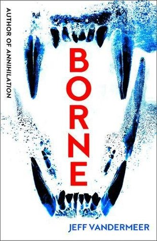
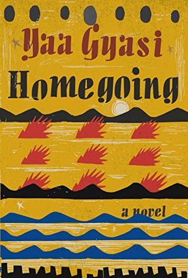
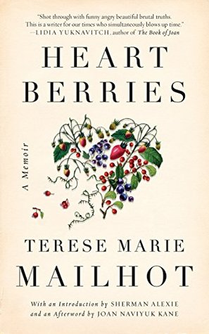
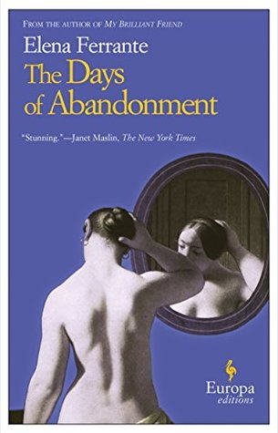
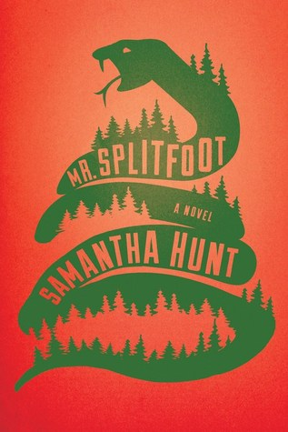
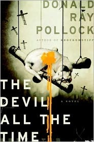
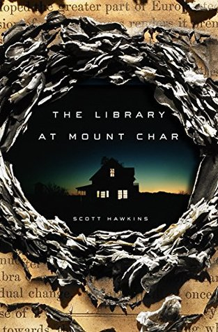
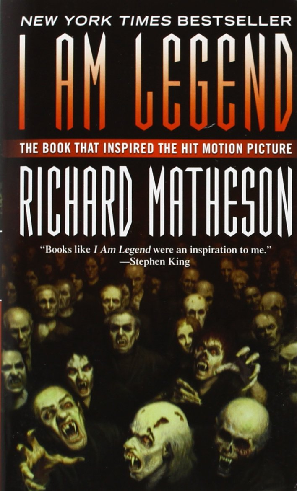

Borne
““We all just want to be people, and none of us know what that really
means."
I really fell into this book like it was a weird, barren and disturbing hole. I started reading it and
then just could not put it down until I was done. Jeff Vandermeer’s imagination is insane. The dystopian
world he’s built, and the characters that live in it, are so richly realized and so weird that I stopped
reading a few times just to wonder, What kind of brain comes up with this stuff?

Homegoing
“No one forgets that they were once captive, even if they are now free.”
Absolutely stunning. An astonishing scope of history for such a slim novel. This family saga starts in
Cape Coast, Ghana and follows many generations over a 300 year period in both Ghana and America, all
packed in to 300 pages. Told as a series of linked short stories, the novel's power seems to intensify
with each generation.

Heart Berries
“I wanted as much of the world as I could take, and I didn't have the conscience to be ashamed.”
Heart Berries is heartbreaking and breathtaking in its scope, vision, and beauty. It is formally
experimental and yet totally accessible. Terese uses the truths and facts of her own life to explore
bigger themes about what it means to be Native now, what it means to be a Native woman, and what it
means to write with stakes and grace. The book has teeth and heart and brain. It is a mythical, lyrical
work about motherhood, about pain, loss and love. I was left in awe.

The Days of Abandonment
I loved the writers who made you look through every line, to gaze downward and feel the vertigo of the
depths, the blackness of inferno.
This was not an easy book to read, or finish. I was disturbed by how much I loathed all the characters,
but I couldn't stop reading. Ferrante is a wonderful writer, and even if you find the characters as
distasteful as I did her language and writing keep you turning the pages.

Mr. Splitfoot
“All stories are ghost stories”
This book broke my heart then cradled it in lullabies. Hunt has a breathtaking way with words and is
something like a modern day Shirley Jackson. Confusing in a good way. Much blurring of life and death,
magic and deception, the imagined and the real.

The Devil All the Time
“Some people were born just so they could be buried.”
One of the darkest novels I’ve read in yearse. This is about as barbarous as fiction gets, but the
violence is not gratuitous. Many of his charactersmanage to maintain unexpected shreds of humanity and
humor despite the murder and lust and hypocrisy they perpetuate. Pollock’s three plots braid
beautifully, and brutally, together until an ending that’s as satisfying as everything that comes before
it.

Becoming
“Am I good enough? Yes I am.”
An authentic story of the life of an inspiring woman, who has faced challenges and experienced great
privilege with humility and gratitude. The Obamas legacy will always be the value they place on hard
work, true human connection, and commitment to equity; values which underscore every story in this book.
A wonderful read.

The Library at Mount Char
"The only real escape from hell is to conquer it."
Delirious and extraordinary, and much unlike anything else I've read this year, perhaps ever before.
Cultish, crazy, clever, calamitous, this story - in the deepness of it's madness - felt absolutely
bottomless. Reading it can be analogized to experiencing the height of a fever, that's how constant and
surreal its plot gushes outward. Humored and fantastical, endlessly creative in its scope, it's an
instant, inspired favorite.

The Haunting of Hill House
“No live organism can continue for long to exist sanely under conditions of absolute reality.”
It still astounds me how a decades old horror story can continue to captivate and terrify a modern-day
audience, more attuned to altogether grislier, bloodier, and gorier tales. Very impressed with the
writing and tone. The story is simple and vague and devolves into insanity, but the unique emphasis on
psychology and subtle social interactions is wonderful.

I Am Legend
“In a world of monotonous horror there could be no salvation in wild dreaming.”
Equal parts survival story, post-apocalyptic story, zombie invasion story, mystery, recovery story,
allegory, and thriller, this was one of those books where you have to pull back every once in a while
and marvel at how beautifully this machine runs. Suspenseful, harrowing, terrifying. Excellent. It never
missteps.